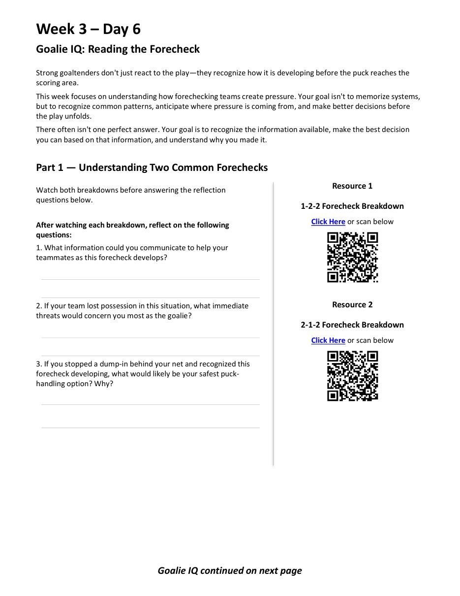
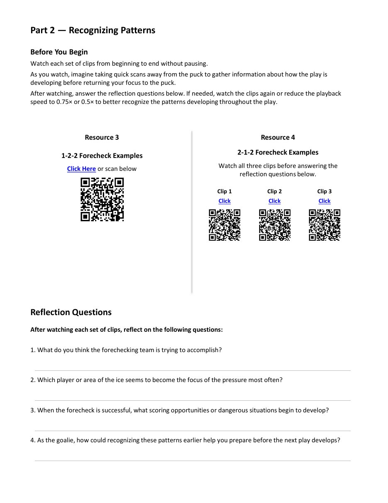
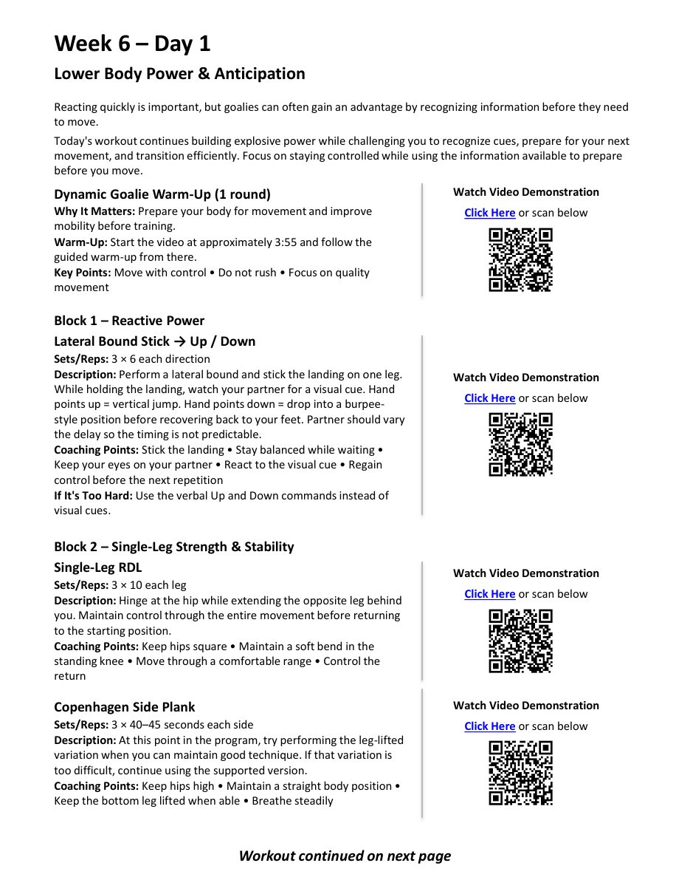
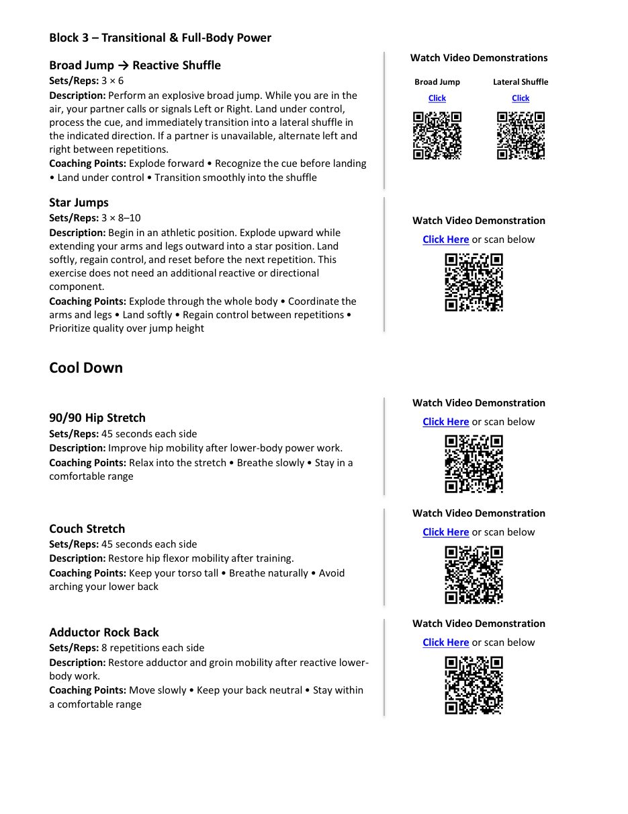

Flip through the program
Use the buttons, arrow keys, or swipe to turn the page.
Sample workout pages
A closer look at two sessions from the program.

Week 3 · Day 6 — Goalie IQ: Reading the ForecheckVideo breakdowns and reflection questions.

Part 2 — Recognizing PatternsWatch clips, scan for cues, then reflect.

Week 6 · Day 1 — Lower Body Power & AnticipationWarm-up and reactive power blocks with demo videos.

Workout continued — Block 3 & Cool DownFull-body power finisher and mobility work.